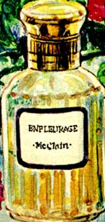
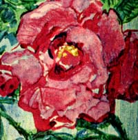
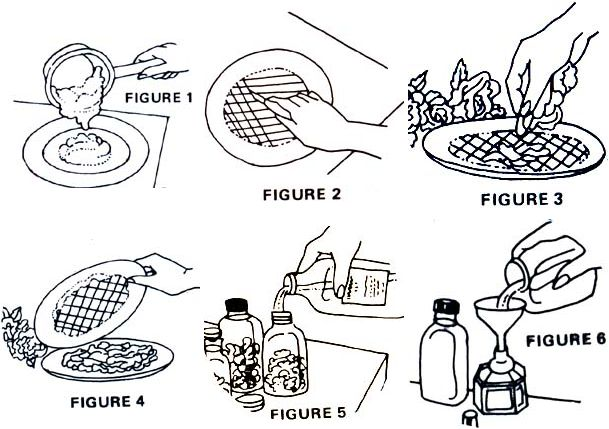

Right in the kitchen
Believe it or not, I know a technique by which you can make an infinite variety of exotic, sweet-smelling perfumes using little more than [1] fresh flowers from the garden, [2] ordinary rubbing alcohol, and [3] a hunk of beef suet The technique-which has been known to French perfume houses for centuries-is called enfleurage.
You've no doubt noticed how animal fats (butter, lard, suet, etc.) tend to absorb odors from any and all nearby strong-smelling substances. Well, it's this very property which makes enfleurage possible ... and which perfume houses use to advantage in the manufacture of their sweet-scented goods.
This is how enfleurage is carried out in the fields of southern France: Freshly plucked flower petals are layered onto large panes of fat-coated glass, and the sheets are loaded into wooden frames called chassis. Each chassis full of fat, glass, and flower petals is next scaled airtight for several days . . . during which time the lard "soaks up" fragrances from the heavily scented flowers. The old petals are then taken out of the chassis and replaced by fresh blossoms, the frames are resealed, and the process is allowed to continue for a few more days. This procedure is repeated again and again, until finally the fats have absorbed all the fragrance they can hold.
At this point, the aromatic fat-which is called pomade-is scraped from the glass, collected, and put through various solvent extraction steps designed to remove the fragrance and bottle it. The deodorized fats are then recycled and used again in the enfleurage process.
The technique I've just described is something you can do right in your own kitchen ... on a smaller scale, of course. Using flowers from your garden, suet from the kitchen, and alcohol from the medicine cabinet, you can create perfumes which are truly unique ... truly you. Moreover, the most expensive of your kitchen concoctions will only cost you-out of pocket-three or four cents an ounce to make, compared to the several dollars an ounce you might pay for the department store equivalent,
You'll need no special skills and very little equipment to get started in enfleurage. Here's everything the process requires:
[1] Beef suet, reasonably free of impurities. (Lily-white lard obtained at the market will do . . . but where's your spirit of adventure?) The amount of the grease you'll need will vary, depending on how much perfume you intend to make.
[2] One large pot for purifying the fat.
[3] Powdered alum. (Easily obtainable from almost any drugstore.)
[4] Glass-not plastic-platters, plates, or soup bowls, in identical pairs.
[5] Adhesive tape.
[6] A measuring cup'.
[7] A fine-sieve strainer.
[8] Glass-not plastic-bottles with tight-fitting caps or stoppers.
[9] A glass rod or piece of coat hanger to use when stuffing chunks of pomade into bottles (optional).
[10] A small, non-plastic funnel.
[11] A clean eyedropper.
[12] Several bottles of 70% isopropyl (rubbing) alcohol, or 90% ethyl alcohol.
[13] Oil of cedar or oil of sandalwood. (Obtainable at the drugstore.)
In addition to the above items, of course, you'll need fresh flowers. I didn't mention flowers before because I didn't want to encourage you to go out and pick them before they're needed. Remember that to be suitable for enfleurage, blossoms must be fragrant ... and to be fragrant, they've got to be fresh. So don't go running off to the garden just yet ... I'll tell you when.
The first and most important step in enfleurage is the deodorization /purification of the fat.
If you're planning to use store-bought lard-which is already pure enough for our purpose-simply place the chunk of lard in a pan, melt it over low heat, and go on to the next step.
If, however-like me-you count yourself among the hardy souls who revel in creating things from scratch, you'll naturally want to start with a hunk of beef suet in a large pot. Add enough water to cover the mound of fat and dissolve a teaspoon of alum in the liquid. Then boil gently for 45 minutes, adding hot water as needed to keep the pot from going dry. (Don't let it boil dry or the fat may scorch ... in which case you'll have to throw the suet away and start again, since a burnt odor cannot be removed from fat.)
After the 45-minute boil, remove the chunk of suet, and allow the remaining mixture to cool somewhat so that the grease can rise to the top and slightly congeal. When the fat has risen, skim it off and put it into a bowl or other container, then [1] clean out the pot, [2] put the partially purified (congealed) suet back in, and [3] begin the cleansing procedure again using the same amount of water and alum. Boil once more for 45 minutes, allow to cool, and remove the fat.
Repeat the above cycle as many times as necessary to obtain completely odorless fat, separating out-in the process-any impurities you may have noticed in the suet. I can't emphasize too strongly that before going on to the next step, your purified fat should be as free of scent as possible.
After the last round of boiling, remove the thoroughly cleansed grease from the water and allow it to cool to the consistency of chilled molasses.
Next, select several matching pairs of plates, platters, or soup bowls which-when placed face to face-mate fairly tightly with one another. There should be no large, airy gaps ground the dishes' rims which might allow fragrances to leak away
Now pour your viscous, still-cooling fat into the containers until each is filled to a depth of one-half inch (somewhat more, for soup bowls) as in Fig. 1. Allow the grease to solidify-you can refrigerate the containers if necessary-but before the fat hardens too completely, score its face with a knife in the crisscross pattern depicted in Fig. 2. (The purpose of this is to increase the exposed surface area of the fat so that it'll absorb aromas more quickly and more completely.
After you've scored the face of each pour of grease, take a walk out to the garden and gather your flowers. For best results, be sure to select blossoms which are highly scented ... and then pick them only at their peak fragrance. That is, you should harvest night-blooming varieties only after dark, and day-blooming flowers early in the morning before the dew begins to evaporate.
You may wish to create a single-scent perfume (all rose, for example, or all lily) ... or you might prefer to combine several floral s cents for a bouquet-like fragrance. And you needn't restrict yourself to just flowers! Perhaps a dash of ground or whole cinnamon, cloves, mace, nutmeg, or vanilla-along with the flower scent you select-will impart to your perfume exactly the intriguing spiciness you want. Then again, some lemon or lime rind mixed in with the blossoms may best express your individuality. In any case, experiment ... be creative. Let your imagination go!
Once you've gathered together your flowers, spices, and/ or other sources of scent, bring them into a kitchen which is not too hot, too drafty, or too dry (any of these conditions could rob your floral assortment of precious fragrances while you work). Then spread a piece of wax paper or plastic wrap over the work area and pluck petals onto it. Be careful not to allow any green parts of the flower-stem, stalks, leaves, calyx- to be mixed in with the blossoms. These sections of the flowering plant frequently harbor fungi which are capable of spreading rot and decay (which can totally ruin your perfume-making) through the petals during enfleurage.
When you've separated all the petals onto the wax paper, lightly sprinkle about two inches of the blooms over one of the fat-coated dishes that you prepared earlier. Add a dash of spice or citrus rind to the plate if you've so chosen (Fig. 3). Next, place the matching fatted plate or bowl over the first and seal the two together with tape (Fig. 4). Repeat the process for each pair of fat-coated dishes. Then set the petal-filled, taped-together containers in a safe place (where you won't be tempted to peek inside) and leave them for a day or two.
Twenty-four to forty-eight hours later the fats will have absorbed most of the available fragrance from the flower petals. Which means it's time for you to pick fresh blooms, pluck their petals, open the sealed dishes, and replace the old blossoms with the new ones. Then reseal the containers and set them aside again. Over the next week or so, repeat this step of replenishing the fragrance-depleted petals several more times ... until the fats become so entirely saturated with a flowery scent that they can't possibly benefit from exposure to one additional periwinkle. At this point, congratulate yourself: you've successfully made pomade.
So far, so good. However, you can't (or probably won't want to) wear pomade. Instead, you need a way to extract the delightful aroma from the fat so that you can bottle just the scent for use as a perfume. And this is where alcohol enters the picture.
What you do, first of all, is chop the pomade into small bits and-using a coat hanger, glass rod, or other imple ment-stuff the little pieces into bottles so that each is about half-filled with the fragrant fat. Next, fill the containers to the brim with rubbing alcohol and cap each bottle tightly as soon as it's filled (Fig. 5) to prevent undue evaporation of the liquid.
Then comes the hardest part of all: stash the tightly sealed vessels in a dark place for three months-that's right, three months -and shake each bottle from time to time to ensure that the contents are properly mixed. At the end of the storage period, you're ready for the final step in the production of your perfume.
Gather up all the bottles of alcohol-pornade and set them down at your worktable. Then, using a fine-sieve, strain the aromatic alcohol into clean bottles-again with tight-fitting caps-and seal each one in turn to prevent undue evaporation (Fig. 6).
Because of alcohol's volatile nature, a substance known as a fixative must then be added to the scented liquid in order to retard vaporization. Two fixatives are commonly used for this purpose: oil of cedar and oil of sandalwood.
Whether you choose oil of cedar or oil of sandalwood as your fixative is purely a matter of personal preference. I should point out that, although your perfume's scent will primarily reflect the blossoms and/or spices you selected in the beginning, the fixative cannot help but add a scent of its own to your Eau de Roses, or whatever. Thus, whichever oil you choose-or even if you use both together-you'll be forced to compromise between counteracting the volatility of the alcohol on the one hand, and being able to retain as much of your primary scent as possible on the other.
You must consider many variables when you're trying to determine the proper amount of fixative to add to each bottle of alcohol. Variables such as: [1] how completely you deodorized the fats before exposing them to the flower petals, [2] how much fragrance the plucked petals emitted, [3] how much of the scent the fats absorbed, and [4] how often and how thoroughly you shook each bottle during the three months of dark storage.
A good general rule of thumb is the addition of three or four drops of fixative to every half cup of perfume. Try this with a single bottle of scented alcohol, then use the resulting perfume for a few days. Did it evaporate too quickly? If so, try a bit more fixative, Is the floral bouquet dulled or overpowered by the fixative's scent? In that case, add more scented alcohol to the perfume to dilute the fixative (and, next time, use less of the fixative to begin with).
Trial and error is the best-if not the only-way to learn the proper fixative/perfume ratio.
There you have it: You've actually made a French perfume in your own kitchen, with flowers from your own garden! And except for a few absurdly expensive essences obtained from civet, musk, and ambergris (which are used to impart greater diffusiveness to the final scent), your homemade Chanel differs little in composition from the elaborately packaged offerings of France's finest perfume houses.
There is one thing, in fact, that your perfume can give you that no department store's product can: namely, the satisfaction which comes from knowing that your one-of-a-kind fragrance came out of your kitchen, your garden, and-perhaps most important-your imagination ... and for only four cents an ounce!
MAXINE B. McCLAIN:
Far from being an arcane art, enfleurage-a centuries-old method of making perfume-is something that nearly anyone can do at home right now! It's easy, it's inexpensive, and (as folks who've tried it know) it's "just plain fun"! Maxine McClain tells you how.
|
 |
 |
 |